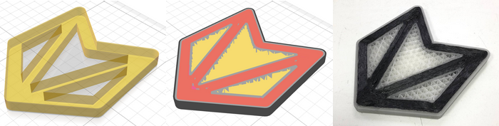

Masks (Premium feature)
Part masks allow to set the custom internal structure in different volumes of the part. Two types of masks are available - internal masks and full masks. Internal masks allow setting internal structure parameters such as perimeter count, infill type, density, etc. Full masks additionally allow changing the number of external shell perimeters and top/bottom solid layers.
Support blockers (Premium feature)
Allow preventing the generation of supports under the surfaces that are inside the support blocker volume.
Support enforcers (Premium feature)
Allow forcing the generation of supports under the surfaces that are inside the support enforcer volume.
CLI (Premium feature)
Allow headless slicing from command line. It can be useful for automated scenarios of g-code preparation.
Translation of parts along the Z-axis
Parts can now be translated by Z-axis. If the part is above the buildplate, support structures can be generated between the buildplate and the part.
View control toolbar
New toolbar has multiple tools to zoom, rotate and translate view, turn on and off the visibility of masks
Other Changes
- New button on the Models panel to put the part on the buildplate (the lower point of the part will be located on the buildplate).
- You can now rename parts and masks in the list on the Models panel.
- If a STEP file contains multiple models, these models' relative location is now preserved when you load the file in Aura. You can create the model with masks in CAD software and load the result into Aura.
- Support structures are now generated correctly if one part is located above another.
- Slicing progress indicator was reworked.
- Multiple minor changes in toolpaths generation.
- Override values now saved correctly on license re-activation.
- Project migration is now done through temp files, so the initial project is not modified when opening it in the newer version.